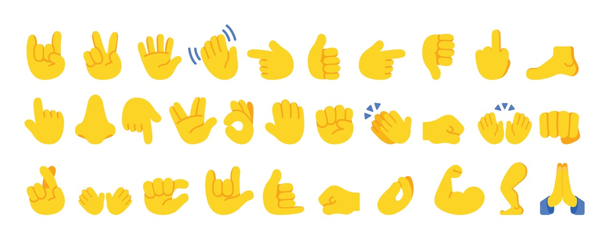
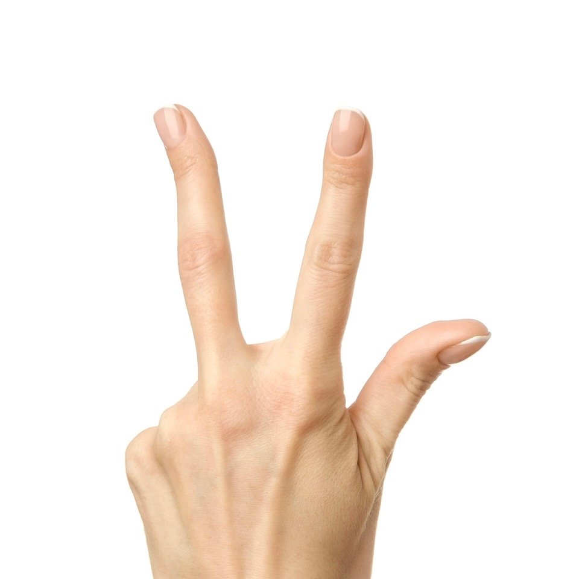
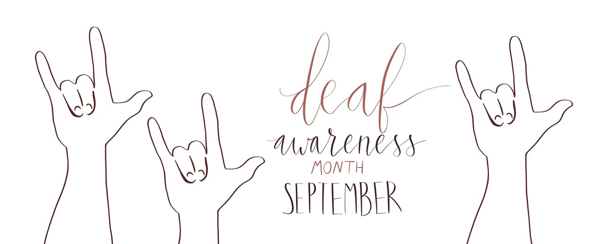
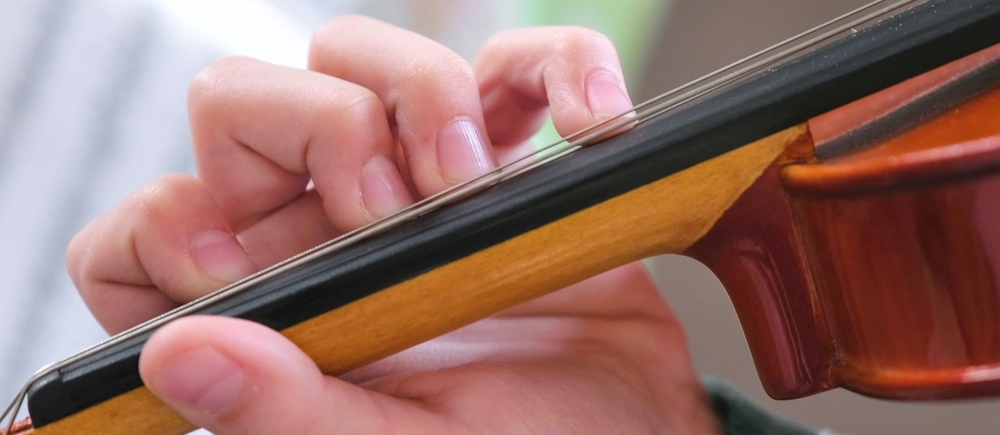
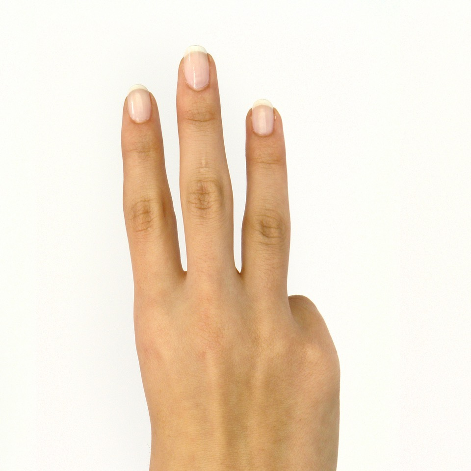
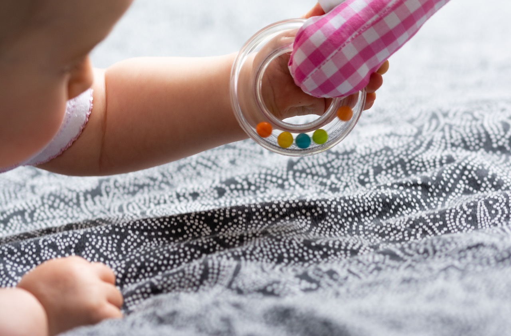
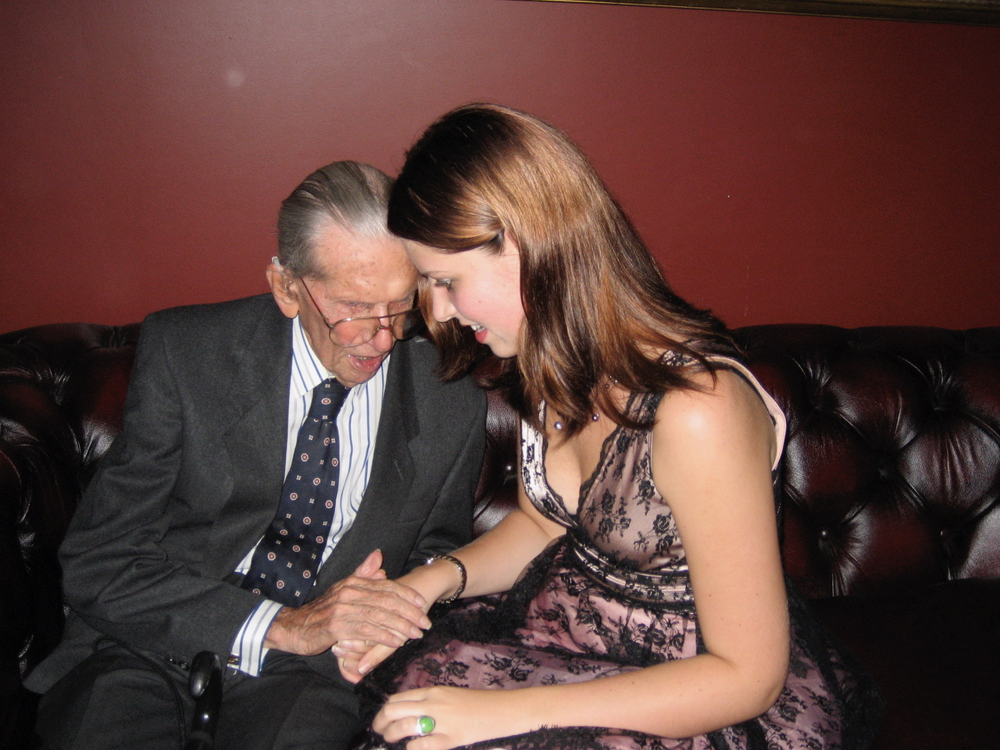

It only takes a split second after burning a finger taking roast chicken out of the oven, or a slipped knife to cut some part of the hand to appreciate our valuable hands. The human hand is a biomechanical masterpiece of 27 bones, 27 joints, 34 muscles and over 100 ligaments and tendons. Its primary function is prehension — grasping with power grip such as a hammer, to precision grips such as in threading a needle. Beyond grasping, hands function as sensory organs for stereognosis (identifying objects by touch alone) and acting as a tool for non-verbal communication through gestures. The incredible number of sayings related to our hands underscores just how important our hands are for function and expression. (Scroll down to the end for just some of these expressions.) Our hands are essential and precious to our way of life. Any interruption in any aspect of hand use has an impact, be it pain, swelling, tingling, numbness and stiffness and perhaps loss of function. If temporary as in a fracture or more long term, either way the adjustment can be difficult.
Hand Signals
If there is any doubt as to the frequency of hand signal use, we only need to look at the hand emojis used by the entire population communicating through text and email. There is probably an emoji for any emotion one needs to express.


Sign Language
With September being designated as Deaf Awareness month, it is fitting that we talk of sign language as it is so crucial to have excellent dexterity to express oneself in sign language.

BSL and ASL
There are many sign languages but even English speaking countries have different sign languages, and not everyone knows that BSL (British Sign Language) and ASL (American Sign Language) are distinct languages with different grammar, vocabulary and alphabets, meaning a signer from one country cannot understand the other. The major difference is that ASL (USA) uses a one handed manual alphabet with every letter using a single hand and is akin to the French sign language. The BSL (UK) uses a two handed alphabet. Australia follows Auslan, akin to BSL.
The Many Occupations Needing Hands
Occupations needing hands are numerous. From hairdressers, bricklayers, plumbers, painters, electricians, massage therapists, dentists, dental technicians, cosmetologists, jewellers, surgeons, chefs, mechanics, tailors, carpenters, welders — these professions form part of the list. Some occupations involve gross motor skills such as in carpentry and others use fine motor skills such as in hand surgery. The ballet dancer’s hands are critical to expression. A bus driver needs hands for qualification.

Hand Insurance
Under a banner of Insurance for Body Parts, some surgeons, musicians or sports players can insure their hands. As it is their livelihood, it is not surprising.
Activities of Daily Living
Cooking, cleaning, dressing, bathing, eating, driving, grooming, writing and communication are all activities requiring hands. We unscrew jars, brush teeth, tie shoelaces, in a bilaterally dextrous fashion. Loss of hand function greatly diminishes quality of life.
Hand Surgery
This specialised surgery involves intricate skills and dexterity to repair many hand ailments, injuries, traumas and disorders. Indeed re-attachment of fingers, repurposing some anatomical features to give a patient back the all important pincer action is sometimes possible. After all it is this feature of hand function which separates us from monkeys. One only has to look at a monkey peeling a banana to observe their lack of pincer action. Joint replacement in the thumb and fingers can alleviate arthritis. The hand surgeon must be imaginative as well as skilled to achieve good results. Some common hand conditions such as trigger fingers, dupuytren’s contracture, carpal tunnel syndrome can be corrected, often using minimally invasive surgery. Bespoke splintage, physiotherapy and injection therapy are all in the purview of the hand surgeon.
I insert a story here concerning the enormously skilled and generous hand surgeon for four decades at Rush University Medical Center who died in late 2025. Dr. Robert R. Schenck was living in the same building as my friend. My friend had Dupuytren’s contracture (a hand condition where thick tissue cords form under the skin, pulling fingers toward the palm.) One morning in the elevator, Dr. Schenck whispered to my friend, “I could fix that if you’d like.” Consultation done and dusted, surgery was subsequently completed and my friend then was able to resume golf easily!
A Shibboleth Related to a Hand Gesture
A shibboleth is any word, pronunciation, custom, or cultural gesture that identifies someone as a member of a particular group. In Inglourious Basterds, the famous basement tavern scene features a classic shibboleth. The British spy Archie Hicox orders three glasses of scotch by holding up his index, middle, and ring fingers, whereas a native German speaker naturally signals the number three using the thumb, index, and middle finger. This tiny slip immediately exposes him to the German major.

Infant Development and Hand Skills
Infants can be assessed at various ages for hand development. The grasping and voluntary release of objects such as rattles, hand to mouth feeding, transferring objects from one hand to another, holding a bottle, clapping hands or pointing with one finger all have prescribed age appropriate stages. Parents are very happy to have their infant reach the milestones.


We cannot forget the human connection of caring and comfort that can be provided through hands.

Quotes
— Indira Gandhi
— Albert Einstein
Understood Expressions
Show of hands • Wash my hands of it • Many hands make light work • Sit on your hands • Time on our hands • Heavy handed • Take things into your own hands • Show us your hand • Tip your hand • Don’t bite the hand that feeds you • A bird in the hand is worth two in the bush • High handed • Lending a hand • A hand-me-down • I want to hold your hand • The devil finds work for idle hands